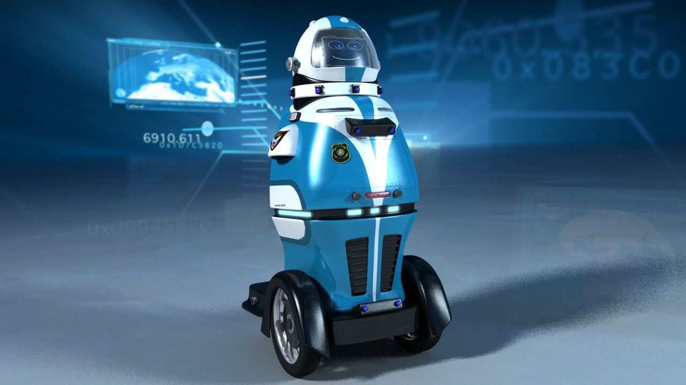
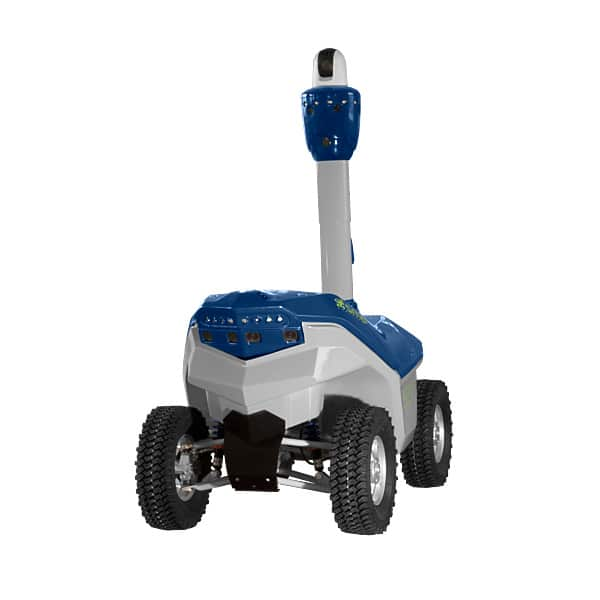

Patrol Robot
During the night, there are people who are being assaulted. It can be robbery, rape or murder and the police does not even know what it is happening.
People are not safe, especially with the high rate in crime in South Africa, people are afraid to walk alone. This high rate is mainly
because of the high rate of unemployment which leads to poverty, other reasons can be drugs, politics, family conditions…
Also in this pandemic time, there are some regulations that are not met. The government put in place a curfew because it helps to reduce the
number of opportunities and activities where people gather in groups, which therefore limit their chances of contracting the coronavirus. However,
there are some people who still get past curfew time.
Let’s look at this table of crime in South Africa during April 2021 and June 2021:
| Crime |
Cases |
| Murder |
5 760 |
| Rape |
10 006 |
| Assault |
76 936 |
Solution
we could create some kind of a robot who can patrol during the night. As we all know, robots cannot get tired and can patrol all night effectively.
Therefore, the robot can be equipped with a 360 degree camera video surveillance system so that it can have a panoramic vision, and it can also be
equipped with some kind of a system which will alert the nearby police officer in case there is someone who is being assaulted or there is someone who
is past the curfew time.

These patrol robots can be considered as “the eyes and ears” of the police. There are many advantages in having patrol robot
such as they cannot be tired and will patrol all night, when someone is being assaulted, the robot can frighten the assailant because he will know
that police are on its way and may leave the victim alone. The only disadvantage is that they cannot intervene on an assault, and they can be easily taken down.